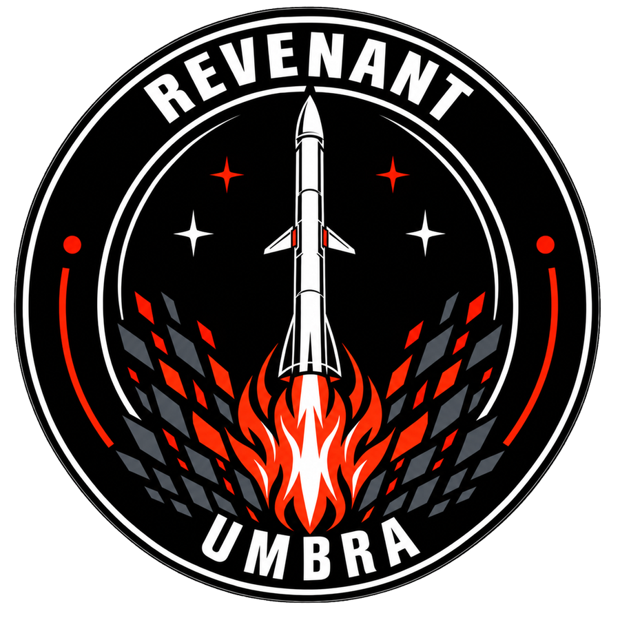
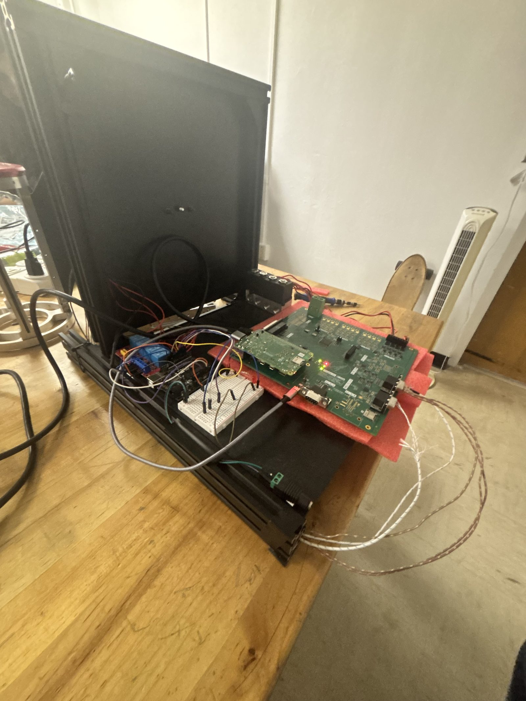
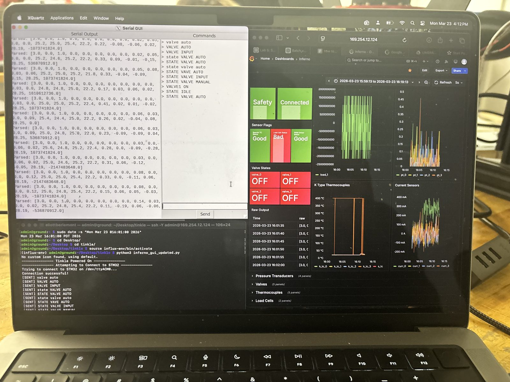
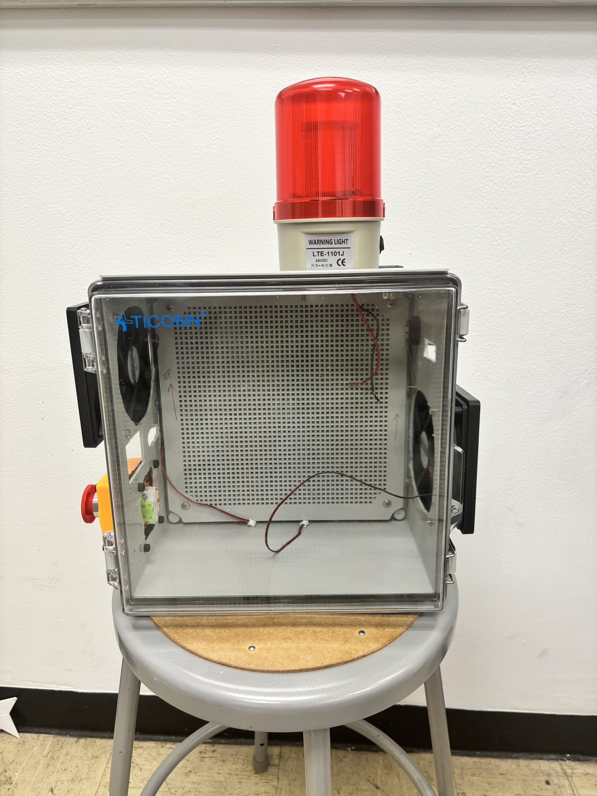
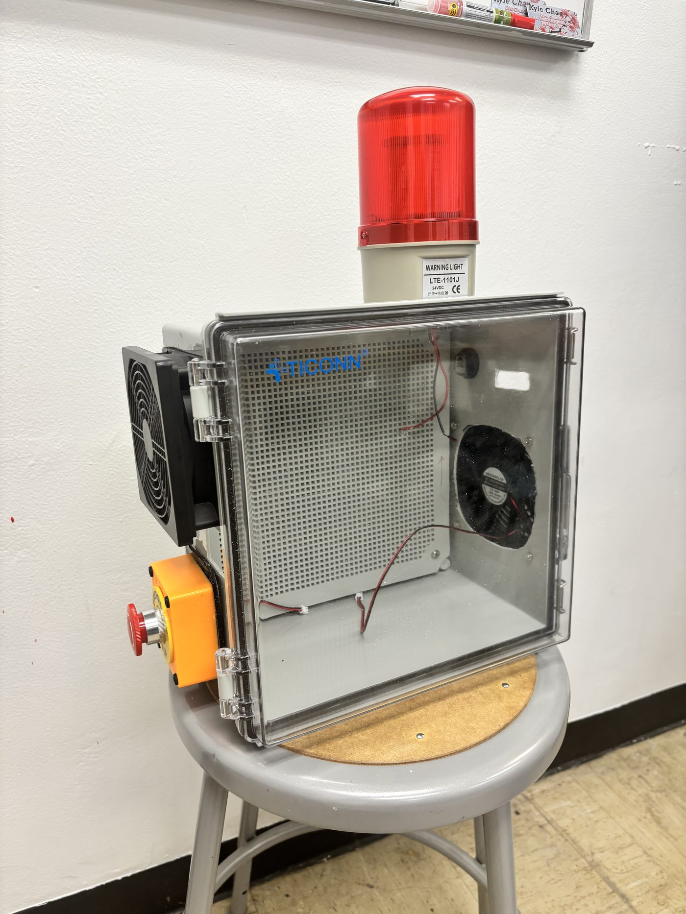
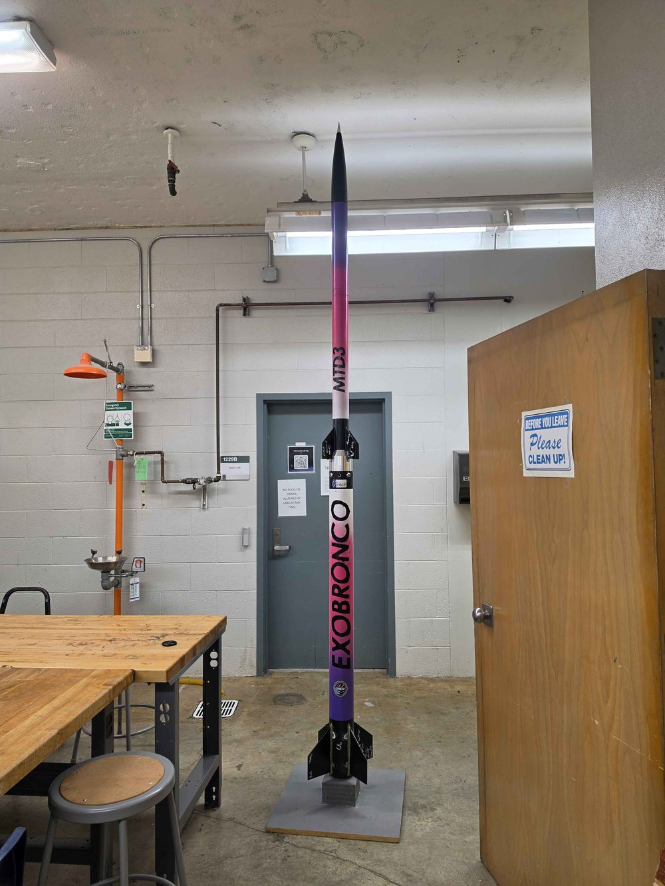
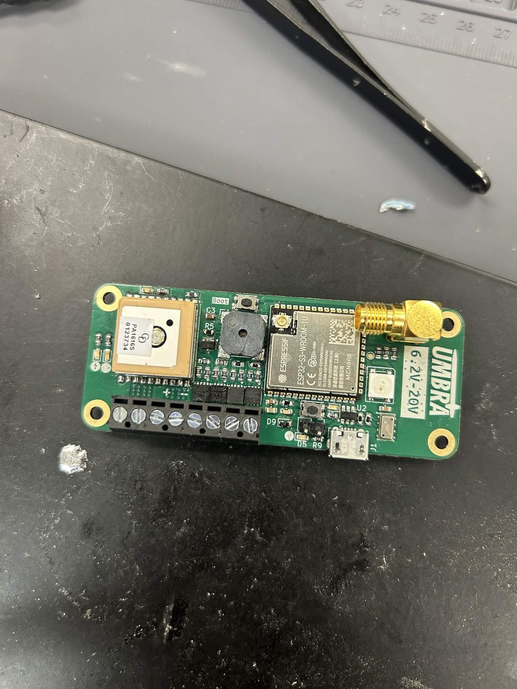
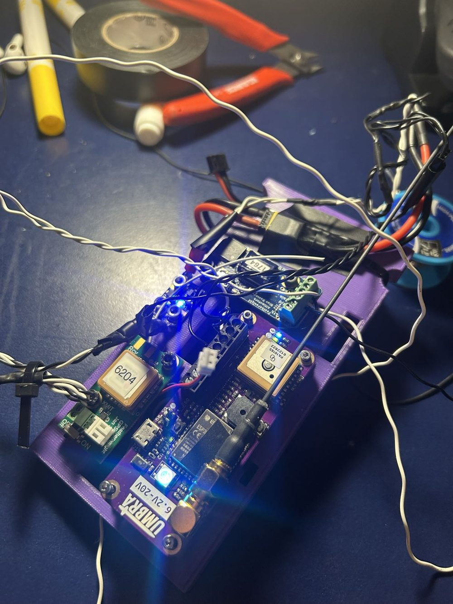
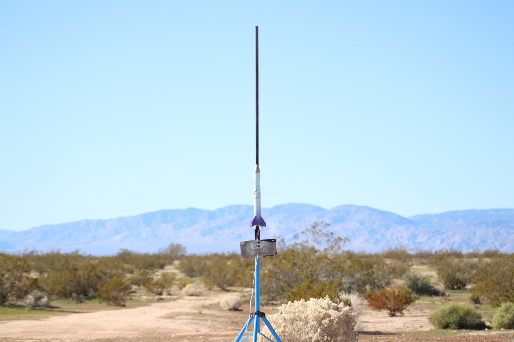
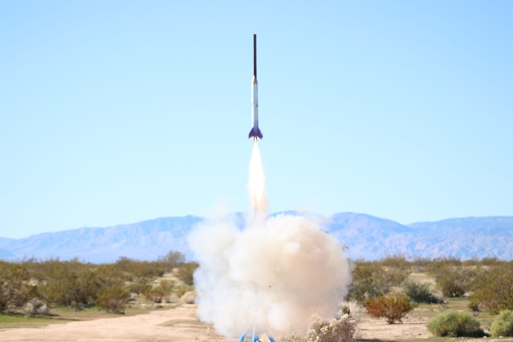

Project Revenant
Project Manager · UMBRA · Fall 2026 – present

Project Revenant is a closed-loop controls project, focused on keeping the vehicle vertical by actively moving exterior control surfaces. Using real-time data processing and control algorithms, Revenant's on-board avionics will stabilize the flight through servo-actuated canards driving pitch, yaw, and roll. The canards are the stabilization system, not trim surfaces added to an already-stable rocket — the fins are sized as a passive floor and nothing more.
I currently lead a large team comprised of over 20 different engineers across five different subteams: Avionics, Aerodynamics, Mechanisms & Actuations, Systems, and Manufacturing. I manage technical scope, budgeting, scheduling, and outreach.
Where the project is now
Revenant is in its first design phase. My role is to oversee different conceptual designs and control philosophies, guiding team members in the direction that best fits the goal of the project. Using software such as OpenRocket, we are developing models with placeholder materials while we flesh out our budget and bill of materials. Working with the other subteams, we are also narrowing down real densities of dynamic components and avionics systems. Through simulation we have successfully developed a non-controlled rocket that remains stable during flight. This will allow us to launch a scale version of the launch vehicle to verify core data points such as apogee, velocity, and acceleration. Our goal is to fully finish designing a true-scale rocket with active controls by the end of the 2027 spring semester.
- Simulation
- OpenRocket driven headless through its Java API via JPype; placeholder materials pending the final bill of materials
- Control
- Raspberry Pi Pico, custom Python control software
- Structure
- Planned: Blue Tube airframe, PA6-CF printed components, G10 fins
- Propulsion
- AeroTech I59WN-P
- Test
- Ground testing on the assembled vehicle rather than a separate rig
Project Inferno — Liquid Engine Test DAQ
Simulation & Software Engineer · UMBRA Electronics · Spring 2026 – present
Project INFERNO is a completely student-designed liquid engine test stand: a dual-propellant, pressure-fed system with cryogenic and variable-flow capabilities. It serves as a reusable test bed for liquid engine research, including but not limited to regenerative cooling, new propellant combinations, thrust vectoring, and throttling. This year the team is assembling its first iteration around the in-house FREEDOM engine design.

My contribution
On Project INFERNO, I worked on data acquisition, specifically valve control. Using a four-layer board built around an STM32H7 processor and a Raspberry Pi Compute Module, I troubleshot connection issues, GUI systems, valve actuation, and sensor sampling speeds.



- Firmware
- C on STM32H7 (HAL), sensor drivers and acquisition loop
- Ground software
- Python, threading, pySerial, InfluxDB client, Tkinter, Grafana
- Instrumentation
- K-type thermocouples, load cells, pressure transducers, current sense, solenoid valves
- Analysis
- LTspice valve driver simulation
- Mechanical
- Fusion 360 / SolidWorks, FDM printed adapters
Project Exo Bronco — Two-Stage Flight Avionics
Avionics Systems Liaison · UMBRA Electronics · Spring 2026 – present
Exo Bronco is a two-stage high-powered collegiate rocket. Both stages fly using custom avionics PCBs, running Python flight code and carrying several different sensors. These computers record data to ensure that the stage separation on the rocket falls within safe and standard operating procedures, and are critical to the success of the mission.



My contribution
My role on Exo Bronco's avionics subteam was troubleshooting and further developing custom Python flight code. My work mainly focused on sensors such as the BNO055 and ADXL375 — specifically how fast they sampled data at different points during flight, to optimize storage space on the onboard microSD card and packet size for live telemetry.
- Platform
- CircuitPython on a custom ESP32-S3 based flight board
- Sensing
- ADXL375 high-G accelerometer, BNO055 9-DOF IMU, MS8607 barometric sensor, GPS
- Telemetry
- RFM9x LoRa, per-stage frequency and spreading factor plan
- Recovery
- Four pyro channels with continuity checking, altitude-triggered main deployment
Small Rocket Competition
Multidisciplinary team · Fall 2025
Designed, prototyped, and launched a G-class rocket to 2,457 ft apogee, placing 2nd overall. I led integration of the avionics and structural subsystems and designed the recovery system, which deployed successfully post-flight. This was the project that got me into UMBRA.


Leadership
Beyond running Revenant, I sit on UMBRA's Executive Board as the Underclassmen Representative and as the association's delegate to the Engineering Student Council. The first role means being the path into real hardware work for students who don't yet know how to ask for it — I'm the link between project managers who need people and underclassmen who want in but haven't found the door. The second means representing UMBRA at the college level on funding and bylaws, and carrying those changes back to the teams they affect.
I joined UMBRA in fall 2025 through the Small Rocket Competition, spent spring 2026 on flight code and data acquisition across several UMBRA Electronics projects, and now focus on developing complex flight systems.
Tools
Design & analysis
SolidWorks, Fusion 360, Onshape, OpenRocket, LTspice
Software
Python, CircuitPython, Arduino, InfluxDB, Grafana, Microsoft Office
Hands-on
SMT rework and board-level repair, FDM printing in PA6-CF, composites layup, harness fabrication, bench instrumentation
Engineering practice
Simulation validation against real material properties, BOM and cost control, scope and schedule management, design reviews
Get in touch
I'm looking for aerospace internships where I can work on avionics, GNC, industrial optimization, or test systems. The fastest way to reach me is email.